mf_map() is the main function of the package, it displays map layers on a
georeferenced plot.
mf_map() has three main arguments:
x, an sf object;var, the name(s) of a variable(s) to map;type, the map layer type.
Many parameters are available to fine tune symbologies and legends.
Relevant arguments and default values are different for each map type and are described in the "Details" section.
Usage
mf_map(x, var, type = "base",
breaks, nbreaks, pal, alpha, rev, inches, val_max, symbol, col,
lwd_max, val_order, pch, cex, border, lwd, col_na, cex_na, pch_na,
expandBB, add,
leg_pos, leg_title, leg_title_cex, leg_val_cex, leg_val_rnd,
leg_no_data, leg_frame, leg_frame_border, leg_horiz, leg_adj, leg_bg,
leg_fg, leg_size, leg_border, leg_box_border, leg_box_cex, ...)Arguments
- x
object of class
sforsfc- var
name(s) of the variable(s) to plot
- type
base: base maps
prop: proportional symbols maps
choro: choropleth maps
typo: typology maps
symb: symbols maps
grad: graduated symbols maps
prop_choro: proportional symbols maps with symbols colors based on a quantitative data classification
prop_typo: proportional symbols maps with symbols colors based on qualitative data
symb_choro: symbols maps with symbols colors based on a quantitative data classification
- breaks
either a numeric vector with the actual breaks, or a classification method name (see mf_get_breaks and Details)
- nbreaks
number of classes
- pal
a set of colors or a palette name (from hcl.colors)
- alpha
if
palis a hcl.colors palette name, the alpha-transparency level in the range [0,1]- rev
if
palis a hcl.colors palette name, whether the ordering of the colors should be reversed (TRUE) or not (FALSE)- inches
size of the biggest symbol (radius for circles, half width for squares) in inches.
- val_max
maximum value used for proportional symbols
- symbol
type of symbols, 'circle' or 'square'
- col
color
- lwd_max
line width of the largest line
- val_order
values order, a character vector that matches var modalities
- pch
point type
- cex
point size
- border
border color
- lwd
border width
- col_na
color for missing values
- cex_na
cex (point size) for NA values
- pch_na
pch (point type) for NA values
- expandBB
fractional values to expand the bounding box with, in each direction (bottom, left, top, right)
- add
whether to add the layer to an existing plot (TRUE) or not (FALSE)
- leg_pos
position of the legend, one of 'topleft', 'top','topright', 'right', 'bottomright', 'bottom', 'bottomleft', 'left' or a vector of two coordinates in map units (c(x, y)). If leg_pos = NA then the legend is not plotted. If leg_pos = 'interactive' click onthe map to choose the legend position.
- leg_title
legend title
- leg_title_cex
size of the legend title
- leg_val_cex
size of the values in the legend
- leg_val_rnd
number of decimal places of the values in the legend
- leg_no_data
label for missing values
- leg_frame
whether to add a frame to the legend (TRUE) or not (FALSE)
- leg_frame_border
border color of the legend frame
- leg_horiz
display the legend horizontally (for proportional symbols and choropleth types)
- leg_adj
adjust the postion of the legend in x and y directions
- leg_bg
color of the legend backgournd
- leg_fg
color of the legend foreground
- leg_size
size of the legend; 2 means two times bigger
- leg_border
symbol border color(s)
- leg_box_border
border color of legend boxes
- leg_box_cex
width and height size expansion of boxes
- ...
further parameters from plot for sfc objects
Details
Relevant arguments and default values for each map types:
base: displays sf objects geometries.
mf_map(x, col = "grey80", pch = 20, cex = 1, border = "grey20", lwd = 0.7,
expandBB, add = FALSE, ...)
prop: displays symbols with areas proportional to a quantitative
variable (stocks). inches is used to set symbols sizes.
mf_map(x, var, type = "prop", inches = 0.3, val_max, symbol = "circle",
col = "tomato4", lwd_max = 20, border = getOption("mapsf.fg"),
lwd = 0.7, expandBB, add = TRUE,
leg_pos = mf_get_leg_pos(x), leg_title = var,
leg_title_cex = 0.8, leg_val_cex = 0.6, leg_val_rnd = 0,
leg_frame = FALSE, leg_frame_border = getOption("mapsf.fg"),
leg_horiz = FALSE, leg_adj = c(0, 0),
leg_bg = getOption("mapsf.bg"), leg_fg = getOption("mapsf.fg"),
leg_size = 1)
choro: areas are shaded according to the variation of a quantitative
variable. Choropleth maps are used to represent ratios or indices.
nbreaks, and breaks allow to set the variable classification.
Colors palettes, defined with pal, can be created with mf_get_pal() or
can use palette names from hcl.pals().
mf_map(x, var, type = "choro", breaks = "quantile", nbreaks, pal = "Mint",
alpha = 1, rev = FALSE, pch = 21, cex = 1,
border = getOption("mapsf.fg"), lwd = 0.7, col_na = "white",
cex_na = 1, pch_na = 4, expandBB, add = FALSE,
leg_pos = mf_get_leg_pos(x), leg_title = var, leg_title_cex = 0.8,
leg_val_cex = 0.6, leg_val_rnd = 2, leg_no_data = "No data",
leg_frame = FALSE, leg_frame_border = getOption("mapsf.fg"),
leg_horiz = FALSE, leg_adj = c(0, 0), leg_bg = getOption("mapsf.bg"),
leg_fg = getOption("mapsf.fg"), leg_size = 1,
leg_box_border = getOption("mapsf.fg"), leg_box_cex = c(1, 1))
typo: displays a typology map of a qualitative variable.
val_order is used to set modalities order in the legend.
mf_map(x, var, type = "typo", pal = "Dynamic", alpha = 1, rev = FALSE,
val_order,border = getOption("mapsf.fg"), pch = 21, cex = 1,
lwd = 0.7, cex_na = 1, pch_na = 4, col_na = "white",
leg_pos = mf_get_leg_pos(x), leg_title = var, leg_title_cex = 0.8,
leg_val_cex = 0.6, leg_no_data = "No data", leg_frame = FALSE,
leg_frame_border = getOption("mapsf.fg"), leg_adj = c(0, 0),
leg_size = 1, leg_box_border = getOption("mapsf.fg"),
leg_box_cex = c(1, 1), leg_fg = getOption("mapsf.fg"),
leg_bg = getOption("mapsf.bg"), add = FALSE)
symb: displays the different modalities of a qualitative variable as symbols.
mf_map(x, var, type = "symb", pal = "Dynamic", alpha = 1, rev = FALSE,
border = getOption("mapsf.fg"), pch, cex = 1, lwd = 0.7,
col_na = "grey", pch_na = 4, cex_na = 1, val_order,
leg_pos = mf_get_leg_pos(x), leg_title = var, leg_title_cex = 0.8,
leg_val_cex = 0.6, leg_val_rnd = 2, leg_no_data = "No data",
leg_frame = FALSE, leg_frame_border = getOption("mapsf.fg"),
leg_adj = c(0, 0), leg_fg = getOption("mapsf.fg"),
leg_bg = getOption("mapsf.bg"), leg_size = 1, add = TRUE)
grad: displays graduated symbols. Sizes classes are set with
breaks and nbreaks. Symbol sizes are set with cex.
mf_map(x, var, type = "grad", breaks = "quantile", nbreaks = 3, col = "tomato4",
border = getOption("mapsf.fg"), pch = 21, cex, lwd,
leg_pos = mf_get_leg_pos(x), leg_title = var, leg_title_cex = 0.8,
leg_val_cex = 0.6, leg_val_rnd = 2, leg_frame = FALSE,
leg_adj = c(0, 0), leg_size = 1, leg_border = border,
leg_box_cex = c(1, 1), leg_fg = getOption("mapsf.fg"),
leg_bg = getOption("mapsf.bg"), leg_frame_border = getOption("mapsf.fg"),
add = TRUE)
prop_choro: displays symbols with sizes proportional to values of a first variable and colored to reflect the classification of a second quantitative variable.
mf_map(x, var, type = "prop_choro", inches = 0.3, val_max, symbol = "circle",
pal = "Mint", alpha = 1, rev = FALSE, breaks = "quantile", nbreaks,
border = getOption("mapsf.fg"), lwd = 0.7, col_na = "white",
leg_pos = mf_get_leg_pos(x, 1), leg_title = var,
leg_title_cex = c(0.8, 0.8), leg_val_cex = c(0.6, 0.6),
leg_val_rnd = c(0, 2), leg_no_data = "No data",
leg_frame = c(FALSE, FALSE), leg_frame_border = getOption("mapsf.fg"),
leg_horiz = c(FALSE, FALSE), leg_adj = c(0, 0),
leg_fg = getOption("mapsf.fg"), leg_bg = getOption("mapsf.bg"),
leg_size = 1, leg_box_border = getOption("mapsf.fg"),
leg_box_cex = c(1, 1), add = TRUE)
prop_typo: displays symbols with sizes proportional to values of a first variable and colored to reflect the modalities of a second qualitative variable.
mf_map(x, var, type = "prop_typo", inches = 0.3, val_max, symbol = "circle",
pal = "Dynamic", alpha = 1, rev = FALSE, val_order,
border = getOption("mapsf.fg"), lwd = 0.7, lwd_max = 15,
col_na = "white",
leg_pos = mf_get_leg_pos(x, 1), leg_title = var,
leg_title_cex = c(0.8, 0.8), leg_val_cex = c(0.6, 0.6),
leg_val_rnd = c(0), leg_no_data = "No data", leg_frame = c(FALSE, FALSE),
leg_frame_border = getOption("mapsf.fg"), leg_horiz = FALSE,
leg_adj = c(0, 0), leg_fg = getOption("mapsf.fg"),
leg_bg = getOption("mapsf.bg"), leg_size = 1,
leg_box_border = getOption("mapsf.fg"), leg_box_cex = c(1, 1),
add = TRUE)
symb_choro: displays the different modalities of a first qualitative variable as symbols colored to reflect the classification of a second quantitative variable.
mf_map(x, var, type = "symb_choro", pal = "Mint", alpha = 1, rev = FALSE,
breaks = "quantile", nbreaks, border = getOption("mapsf.fg"),
pch, cex = 1, lwd = 0.7, pch_na = 4, cex_na = 1, col_na = "white",
val_order,
leg_pos = mf_get_leg_pos(x, 1), leg_title = var,
leg_title_cex = c(0.8, 0.8), leg_val_cex = c(0.6, 0.6),
leg_val_rnd = 2, leg_no_data = c("No data", "No data"),
leg_frame = c(FALSE, FALSE), leg_frame_border = getOption("mapsf.fg"),
leg_horiz = FALSE, leg_adj = c(0, 0), leg_fg = getOption("mapsf.fg"),
leg_bg = getOption("mapsf.bg"), leg_size = 1,
leg_box_border = getOption("mapsf.fg"), leg_box_cex = c(1, 1),
add = TRUE)
Breaks limits
Breaks defined by a numeric vector or a classification method are
left-closed: breaks defined by c(2, 5, 10, 15, 20)
will be mapped as [2 - 5[, [5 - 10[, [10 - 15[, [15 - 20].
The "jenks" method is an exception and has to be right-closed.
Jenks breaks computed as c(2, 5, 10, 15, 20)
will be mapped as [2 - 5], ]5 - 10], ]10 - 15], ]15 - 20].
Examples
library(mapsf)
mtq <- mf_get_mtq()
# basic examples
# type = "base"
mf_map(mtq)
# type = "prop"
mf_map(mtq)
mf_map(mtq, var = "POP", type = "prop")
 # type = "choro"
mf_map(mtq, var = "MED", type = "choro")
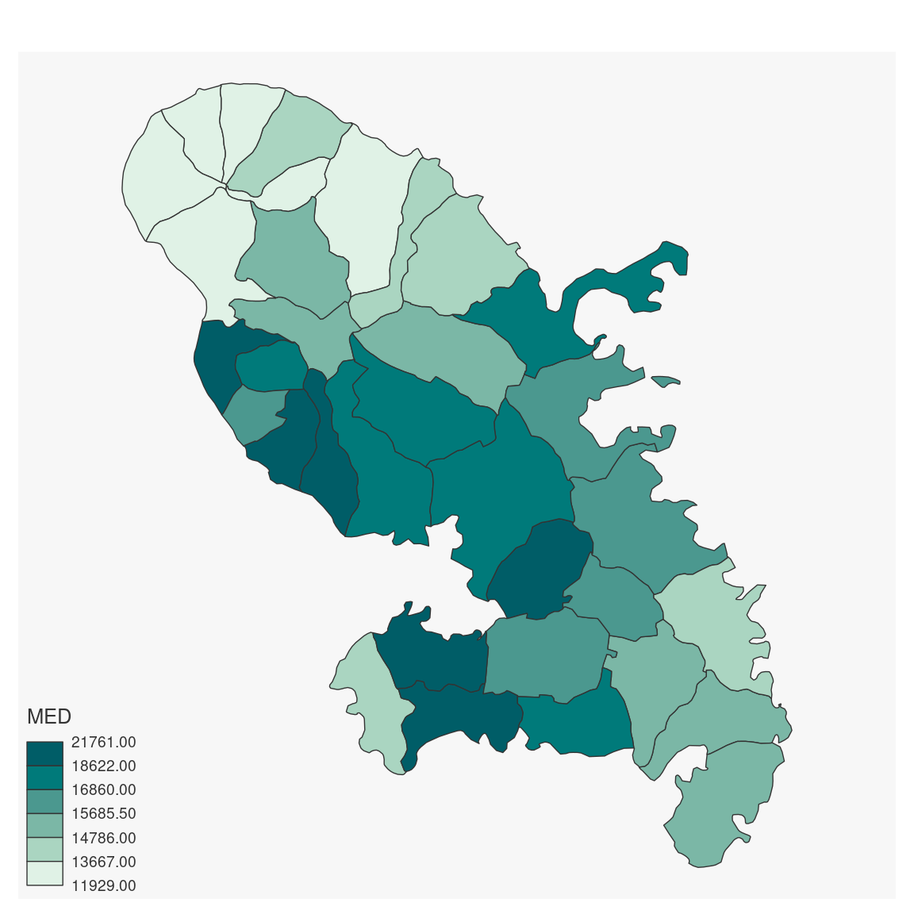
# type = "typo"
mf_map(mtq, "STATUS", "typo")
# type = "symb"
mf_map(mtq)
mf_map(mtq, "STATUS", "symb")
# type = "choro"
mf_map(mtq, var = "MED", type = "choro")
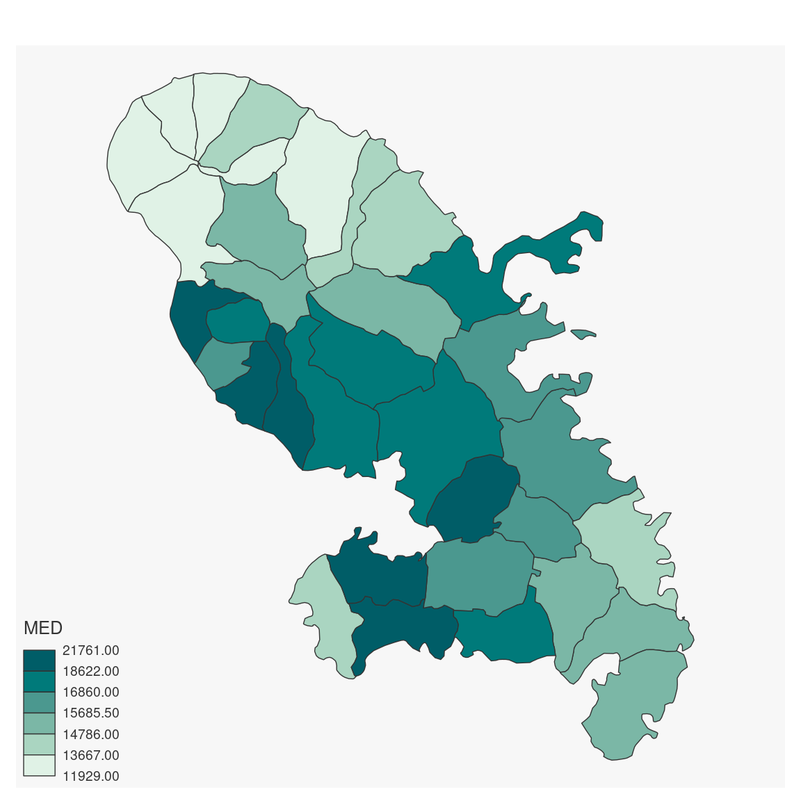
# type = "typo"
mf_map(mtq, "STATUS", "typo")
# type = "symb"
mf_map(mtq)
mf_map(mtq, "STATUS", "symb")
 # type = "grad"
mf_map(mtq)
mf_map(mtq, var = "POP", type = "grad")
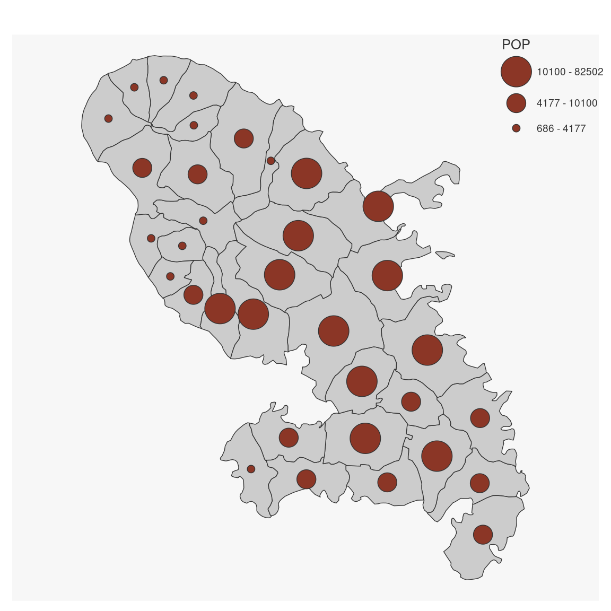
# type = "prop_choro"
mf_map(mtq)
mf_map(mtq, var = c("POP", "MED"), type = "prop_choro")
# type = "grad"
mf_map(mtq)
mf_map(mtq, var = "POP", type = "grad")
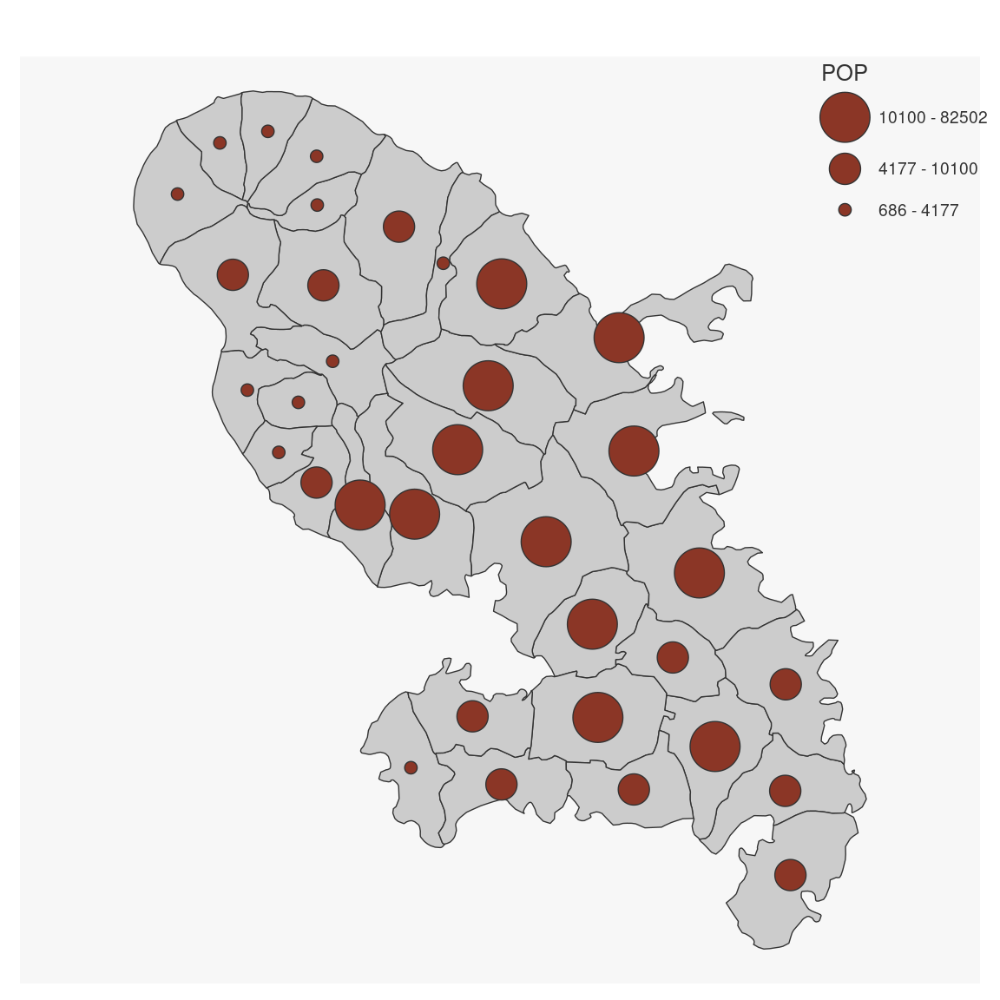
# type = "prop_choro"
mf_map(mtq)
mf_map(mtq, var = c("POP", "MED"), type = "prop_choro")
 # type = "prop_typo"
mf_map(mtq)
mf_map(mtq, var = c("POP", "STATUS"), type = "prop_typo")
# type = "prop_typo"
mf_map(mtq)
mf_map(mtq, var = c("POP", "STATUS"), type = "prop_typo")
 # type = "symb_choro
mf_map(mtq)
mf_map(mtq, var = c("STATUS", "MED"), type = "symb_choro")
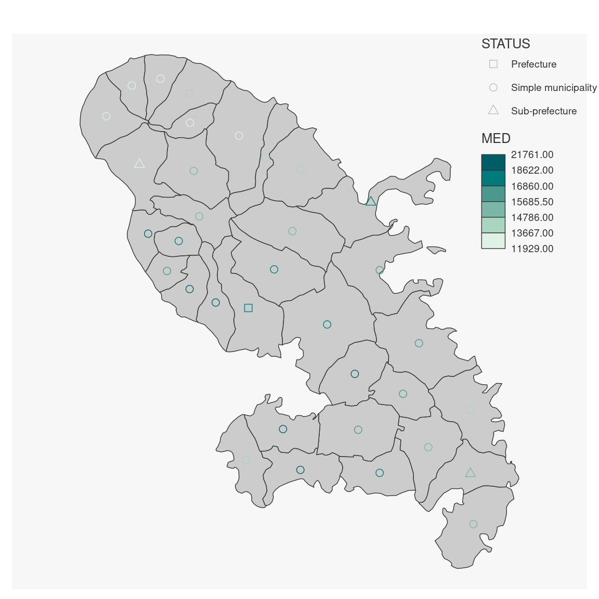
# detailed examples
# type = "base"
mf_map(mtq, type = "base", col = "lightblue", lwd = 1.5, lty = 2)
# type = "prop"
mf_map(mtq)
mf_map(
x = mtq, var = "POP", type = "prop",
inches = .4, symbol = "circle", val_max = 90000,
col = "lightblue", border = "grey", lwd = 1,
leg_pos = "right", leg_title = "Population",
leg_title_cex = 1, leg_val_cex = .8, leg_val_rnd = 0,
leg_frame = TRUE, add = TRUE
)
# type = "choro"
mtq[6, "MED"] <- NA
mf_map(
x = mtq, var = "MED", type = "choro",
col_na = "grey80", pal = "Cividis",
breaks = "quantile", nbreaks = 4, border = "white",
lwd = .5, leg_pos = "topleft",
leg_title = "Median Income", leg_title_cex = 1.1,
leg_val_cex = 1, leg_val_rnd = -2, leg_no_data = "No data",
leg_frame = TRUE, leg_adj = c(0, -3)
)
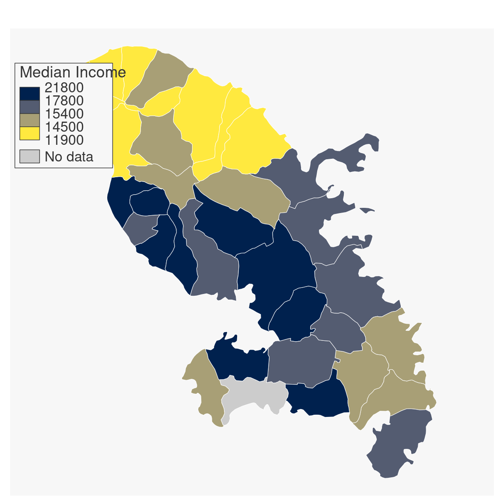
# type = "typo"
mtq[4, "STATUS"] <- NA
mf_map(
x = mtq, var = "STATUS", type = "typo",
pal = c("red", "blue", "yellow"), lwd = 1.1,
val_order = c("Prefecture", "Sub-prefecture", "Simple municipality"),
col_na = "green", border = "brown",
leg_pos = "bottomleft",
leg_title = "Status", leg_title_cex = 1.1,
leg_val_cex = 1, leg_no_data = "No data",
leg_frame = TRUE, add = FALSE
)
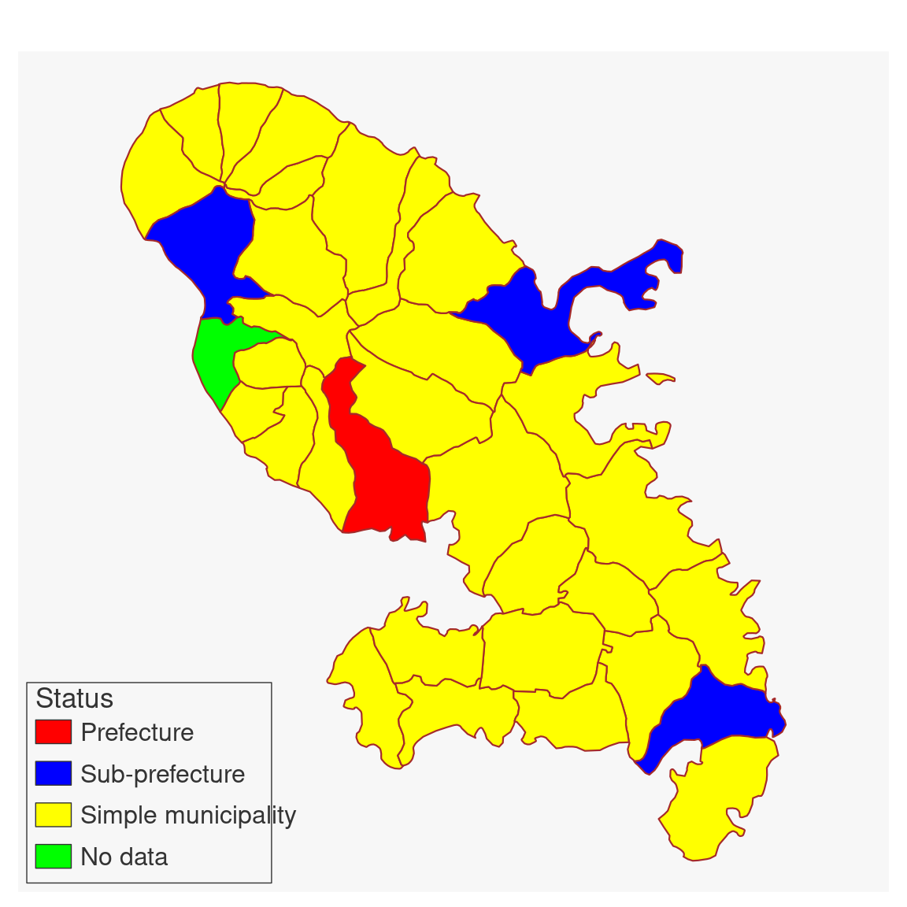
# type = "symb"
mf_map(mtq)
mf_map(
x = mtq, var = "STATUS", type = "symb",
pch = c(21:23), pal = c("red1", "tan1", "khaki1"),
border = "grey20", cex = c(2, 1.5, 1), lwd = .5,
val_order = c("Prefecture", "Sub-prefecture", "Simple municipality"),
pch_na = 24, col_na = "blue", leg_frame = TRUE
)
# type = "grad"
mf_map(mtq)
mf_map(
x = mtq, var = "POP", type = "grad",
pch = 22, breaks = "quantile", nbreaks = 4, lwd = 2, border = "blue",
cex = c(.75, 1.5, 3, 5), col = "lightgreen"
)
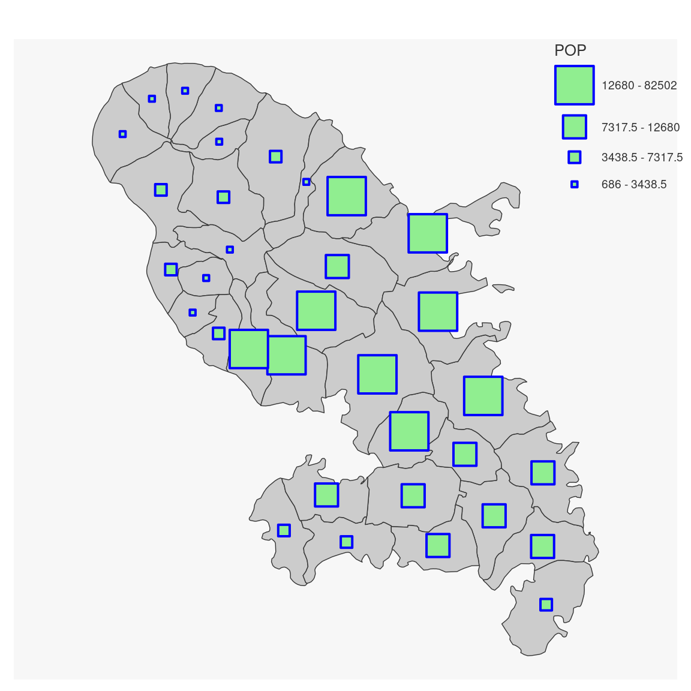
# type = "prop_choro"
mf_map(mtq)
mf_map(
x = mtq, var = c("POP", "MED"), type = "prop_choro",
inches = .35, border = "tomato4",
val_max = 90000, symbol = "circle", col_na = "white", pal = "Cividis",
breaks = "equal", nbreaks = 4, lwd = 4,
leg_pos = "bottomleft",
leg_title = c("Population", "Median Income"),
leg_title_cex = c(0.8, 1),
leg_val_cex = c(.7, .9),
leg_val_rnd = c(0, 0),
leg_no_data = "No data",
leg_frame = c(TRUE, TRUE),
add = TRUE
)
# type = "prop_typo"
mf_map(mtq)
mf_map(
x = mtq, var = c("POP", "STATUS"), type = "prop_typo",
inches = .35, border = "tomato4",
val_max = 90000, symbol = "circle", col_na = "white", pal = "Dynamic",
lwd = 2,
leg_pos = c("bottomright", "bottomleft"),
leg_title = c("Population", "Municipality\nstatus"),
leg_title_cex = c(0.9, 0.9),
leg_val_cex = c(.7, .7),
val_order = c("Prefecture", "Sub-prefecture", "Simple municipality"),
leg_no_data = "No dada",
leg_frame = c(TRUE, TRUE),
add = TRUE
)
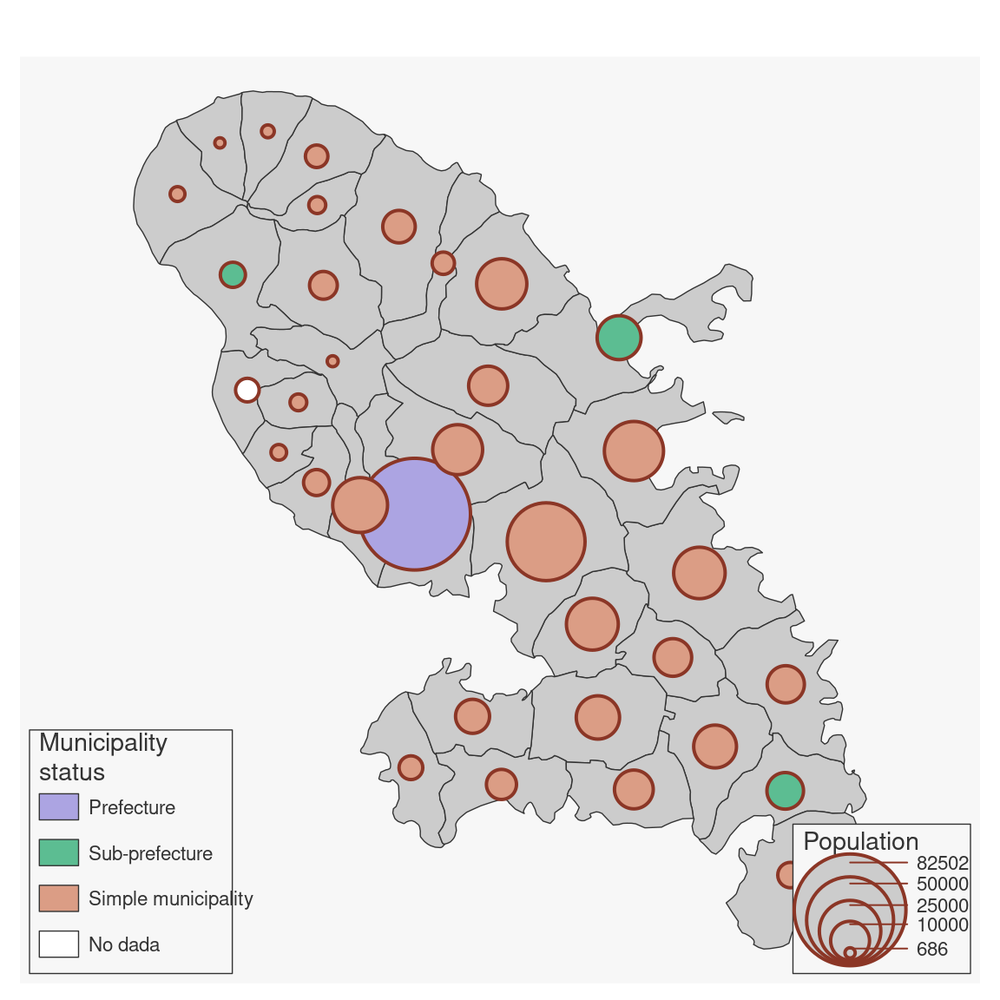
# type = "symb_choro"
mf_map(mtq)
mf_map(
x = mtq, c("STATUS", "MED"), type = "symb_choro",
pal = "Reds 3", breaks = "quantile", nbreaks = 4,
pch = 21:23, cex = c(3, 2, 1),
pch_na = 25, cex_na = 1.5, col_na = "blue",
val_order = c(
"Prefecture",
"Sub-prefecture",
"Simple municipality"
)
)
# type = "symb_choro
mf_map(mtq)
mf_map(mtq, var = c("STATUS", "MED"), type = "symb_choro")
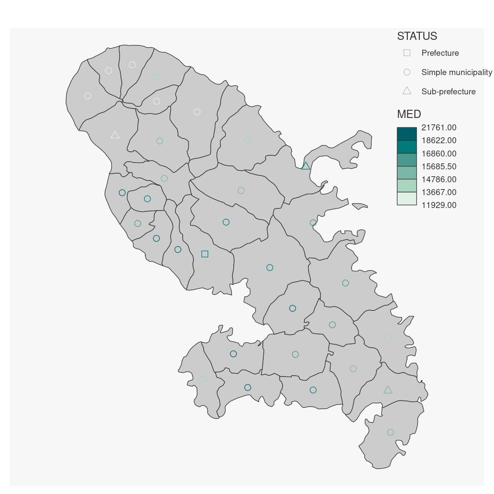
# detailed examples
# type = "base"
mf_map(mtq, type = "base", col = "lightblue", lwd = 1.5, lty = 2)
# type = "prop"
mf_map(mtq)
mf_map(
x = mtq, var = "POP", type = "prop",
inches = .4, symbol = "circle", val_max = 90000,
col = "lightblue", border = "grey", lwd = 1,
leg_pos = "right", leg_title = "Population",
leg_title_cex = 1, leg_val_cex = .8, leg_val_rnd = 0,
leg_frame = TRUE, add = TRUE
)
# type = "choro"
mtq[6, "MED"] <- NA
mf_map(
x = mtq, var = "MED", type = "choro",
col_na = "grey80", pal = "Cividis",
breaks = "quantile", nbreaks = 4, border = "white",
lwd = .5, leg_pos = "topleft",
leg_title = "Median Income", leg_title_cex = 1.1,
leg_val_cex = 1, leg_val_rnd = -2, leg_no_data = "No data",
leg_frame = TRUE, leg_adj = c(0, -3)
)
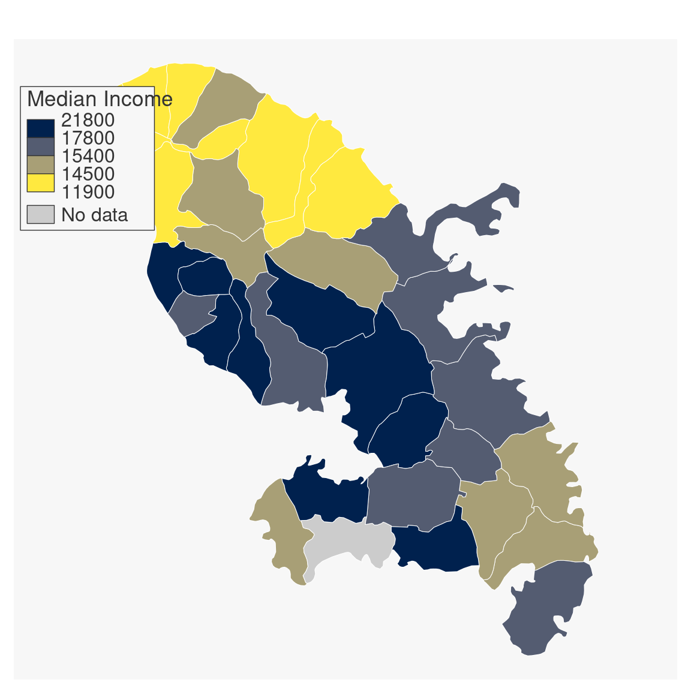
# type = "typo"
mtq[4, "STATUS"] <- NA
mf_map(
x = mtq, var = "STATUS", type = "typo",
pal = c("red", "blue", "yellow"), lwd = 1.1,
val_order = c("Prefecture", "Sub-prefecture", "Simple municipality"),
col_na = "green", border = "brown",
leg_pos = "bottomleft",
leg_title = "Status", leg_title_cex = 1.1,
leg_val_cex = 1, leg_no_data = "No data",
leg_frame = TRUE, add = FALSE
)
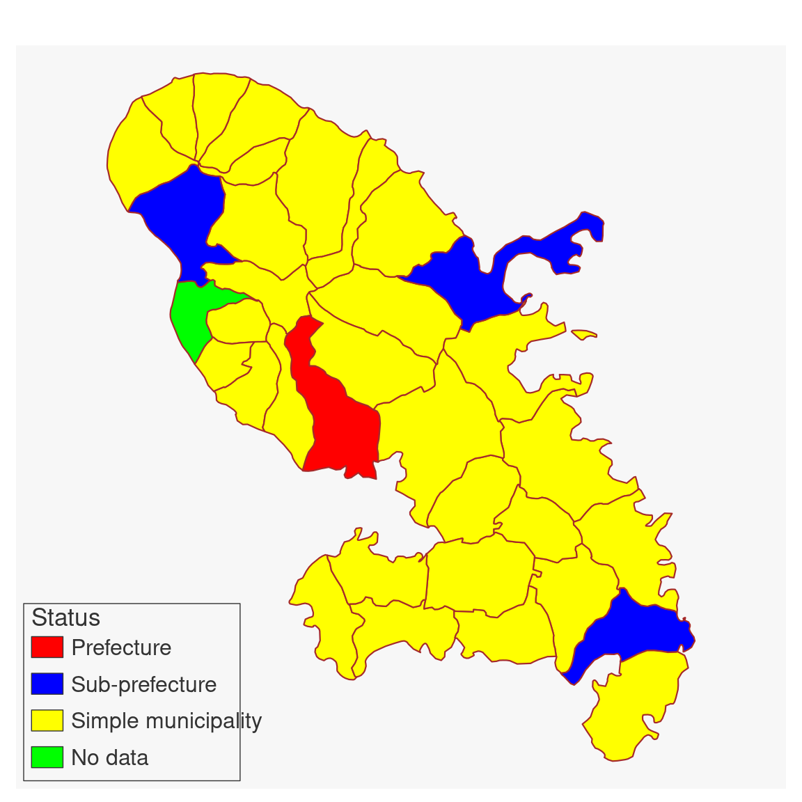
# type = "symb"
mf_map(mtq)
mf_map(
x = mtq, var = "STATUS", type = "symb",
pch = c(21:23), pal = c("red1", "tan1", "khaki1"),
border = "grey20", cex = c(2, 1.5, 1), lwd = .5,
val_order = c("Prefecture", "Sub-prefecture", "Simple municipality"),
pch_na = 24, col_na = "blue", leg_frame = TRUE
)
# type = "grad"
mf_map(mtq)
mf_map(
x = mtq, var = "POP", type = "grad",
pch = 22, breaks = "quantile", nbreaks = 4, lwd = 2, border = "blue",
cex = c(.75, 1.5, 3, 5), col = "lightgreen"
)
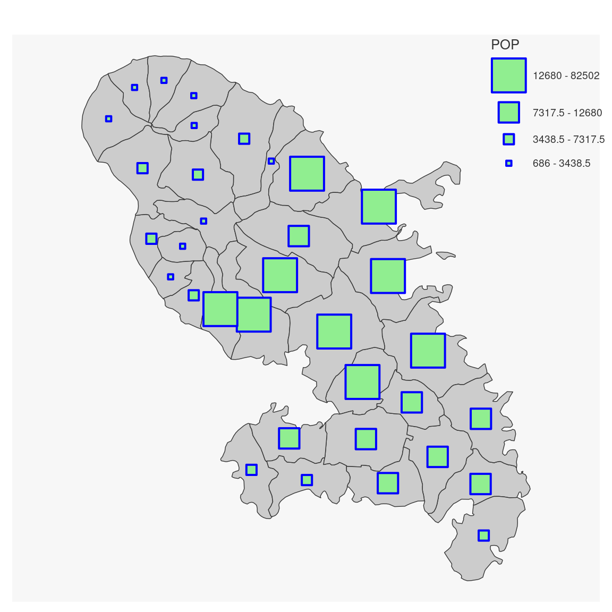
# type = "prop_choro"
mf_map(mtq)
mf_map(
x = mtq, var = c("POP", "MED"), type = "prop_choro",
inches = .35, border = "tomato4",
val_max = 90000, symbol = "circle", col_na = "white", pal = "Cividis",
breaks = "equal", nbreaks = 4, lwd = 4,
leg_pos = "bottomleft",
leg_title = c("Population", "Median Income"),
leg_title_cex = c(0.8, 1),
leg_val_cex = c(.7, .9),
leg_val_rnd = c(0, 0),
leg_no_data = "No data",
leg_frame = c(TRUE, TRUE),
add = TRUE
)
# type = "prop_typo"
mf_map(mtq)
mf_map(
x = mtq, var = c("POP", "STATUS"), type = "prop_typo",
inches = .35, border = "tomato4",
val_max = 90000, symbol = "circle", col_na = "white", pal = "Dynamic",
lwd = 2,
leg_pos = c("bottomright", "bottomleft"),
leg_title = c("Population", "Municipality\nstatus"),
leg_title_cex = c(0.9, 0.9),
leg_val_cex = c(.7, .7),
val_order = c("Prefecture", "Sub-prefecture", "Simple municipality"),
leg_no_data = "No dada",
leg_frame = c(TRUE, TRUE),
add = TRUE
)
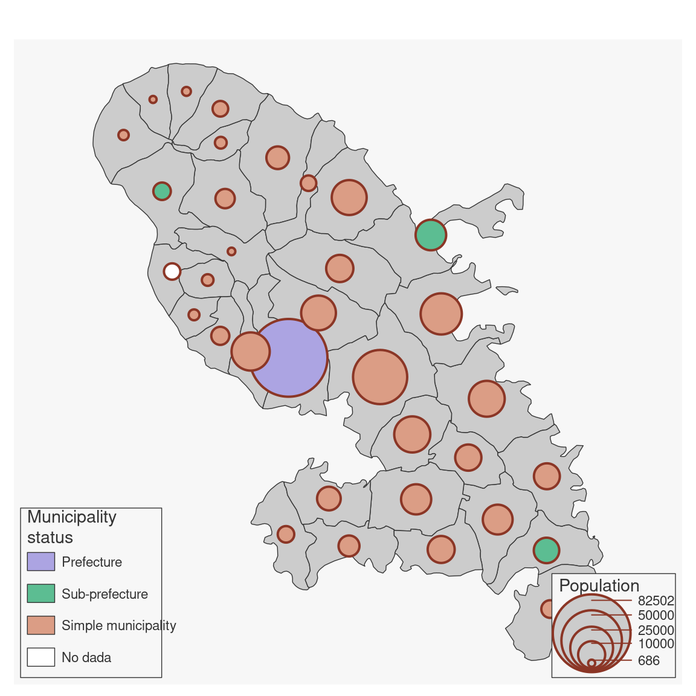
# type = "symb_choro"
mf_map(mtq)
mf_map(
x = mtq, c("STATUS", "MED"), type = "symb_choro",
pal = "Reds 3", breaks = "quantile", nbreaks = 4,
pch = 21:23, cex = c(3, 2, 1),
pch_na = 25, cex_na = 1.5, col_na = "blue",
val_order = c(
"Prefecture",
"Sub-prefecture",
"Simple municipality"
)
)